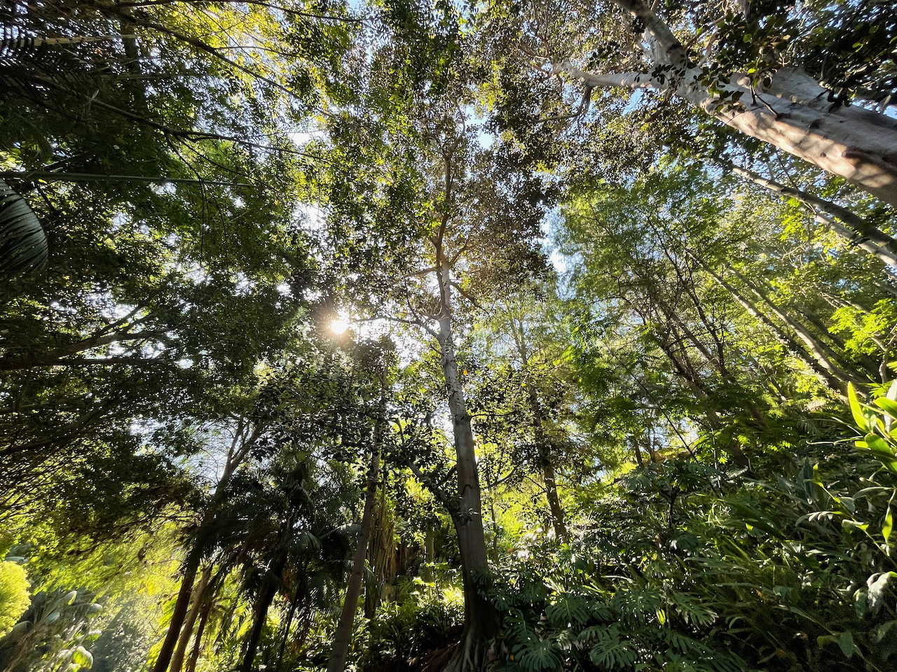
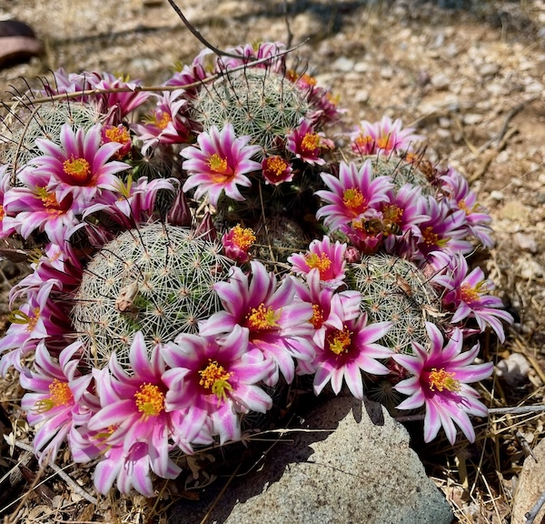
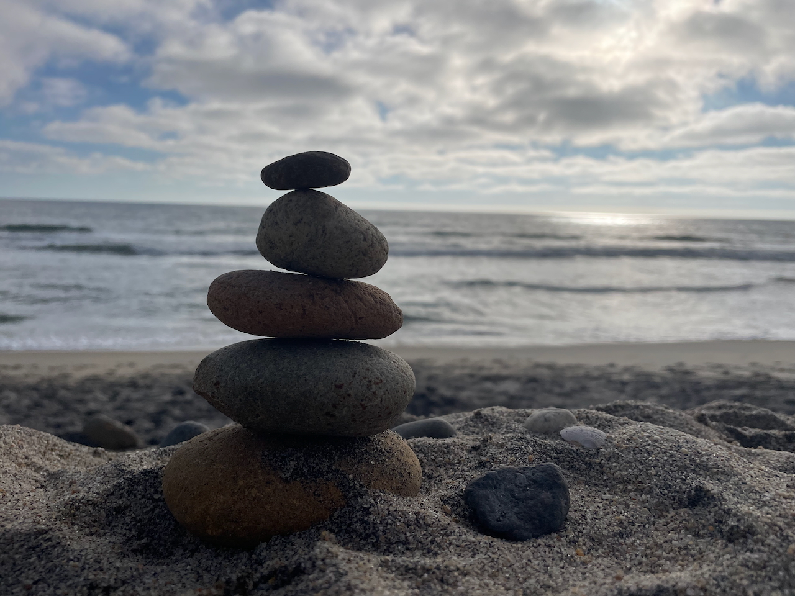

Project One
This project was focused on creating trees and seeing the light through the leaves.

Project Two
This project was about capturing the beauty that exist all around us. IT focused on the importance of color and composition.

Project Three
This project was about displaying the importance of balance; both mentally, spiritually and physically.